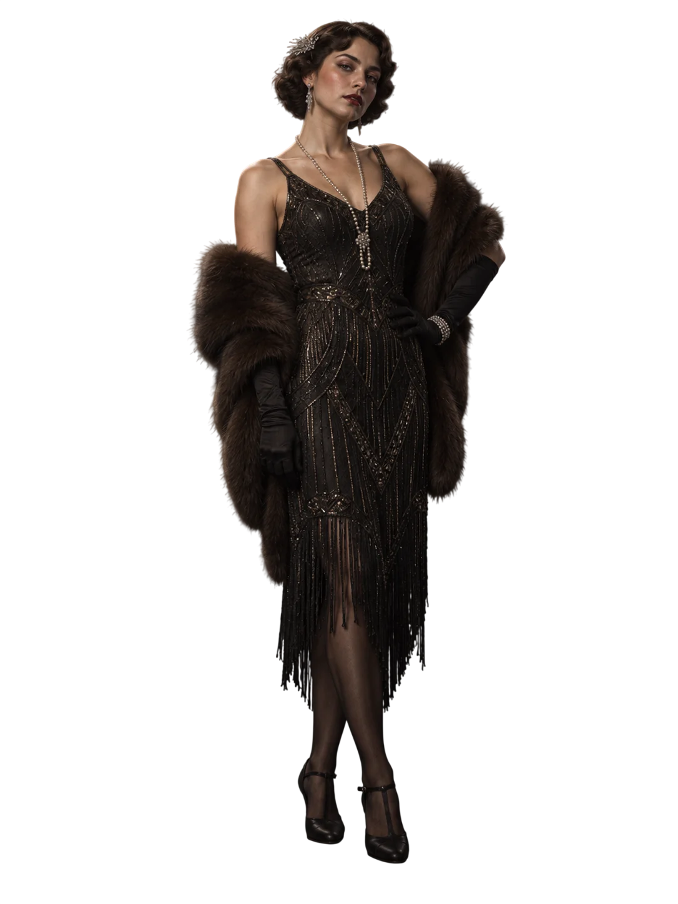

레니 발렌타인
조직의 완력 / 행동대원말코손바닥사슴처럼 거대한 체구와 느린 말투 탓에 멍청하다는 오해를 받지만, 매사에 신중하며 역사책 읽기를 즐기는 지적인 면모를 지녔습니다. 동생 미키를 지키기 위해 조직에 합류했으며, 클럽 댄서 룰루와 진지한 사랑에 빠져 있습니다.
미키 발렌타인
냉혹한 해결사 / 청부 폭력전쟁의 상흔과 뒷골목 폭력으로 감정이 완전히 메마른 맥브라이드 조직의 핵심 살인 청부업자입니다. 유일하게 신뢰하는 형 레니를 위해선 무엇이든 할 수 있습니다.

루이즈 "룰루" 위니
스타라이트 클럽 댄서 & 호스티스블랙워터 크릭 빈민 출신으로 7년 전 시골을 벗어나 보스턴의 세련된 클럽 여성으로 탈바꿈했습니다. 무뚝뚝하지만 마음이 따뜻한 거구 레니를 사랑하며 청혼을 기대하고 있습니다.
스탠리 코리건
야심만만한 운전수 / 휠맨왜소한 체격과 날카로운 목소리 탓에 '꼬맹이' 취급을 받지만, 누구보다 뛰어난 운전 실력과 도시를 손에 쥐겠다는 원대한 야망을 품고 있습니다.
지미 맥브라이드
보스의 친동생 / 위험한 뒤처리 담당거물 보스 데클란 맥브라이드의 친동생이라는 핏줄을 등에 업고, 조직 내에서 형의 위세를 거리낌 없이 휘두르고 다니는 인물입니다. 언제나 자기가 진짜 보스라도 된 양 조직원들을 쥐잡듯 잡으며 거들먹거리지만, 남들의 눈에는 형의 이름값 하나만 믿고 설쳐대는 거만한 골칫덩이로 비치고 있습니다.
매니 지글러
조직 고문 변호사 / 재정 관리인맥브라이드 조직의 모든 법률 문제와 거액의 사업 자금을 도맡아 온 철두철미하고 유능한 고문 변호사입니다. 곤경에 처한 조직원들을 매번 감옥 문턱에서 빼내고 자금을 합법 사업체로 세탁해 내며 보스 데클란의 절대적인 신뢰를 얻고 있습니다. 거친 깡패들 사이에서 언제나 깔끔한 정장과 냉철한 이성을 유지하는 조직의 핵심 브레인입니다.